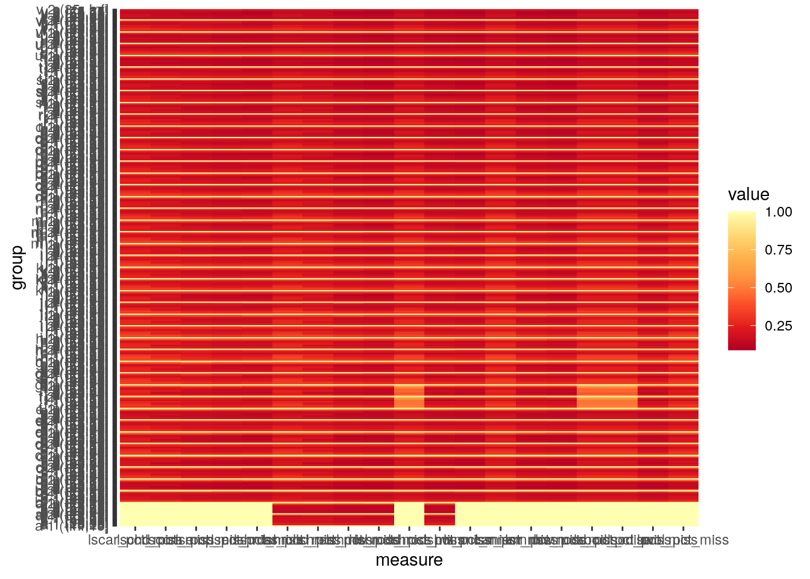
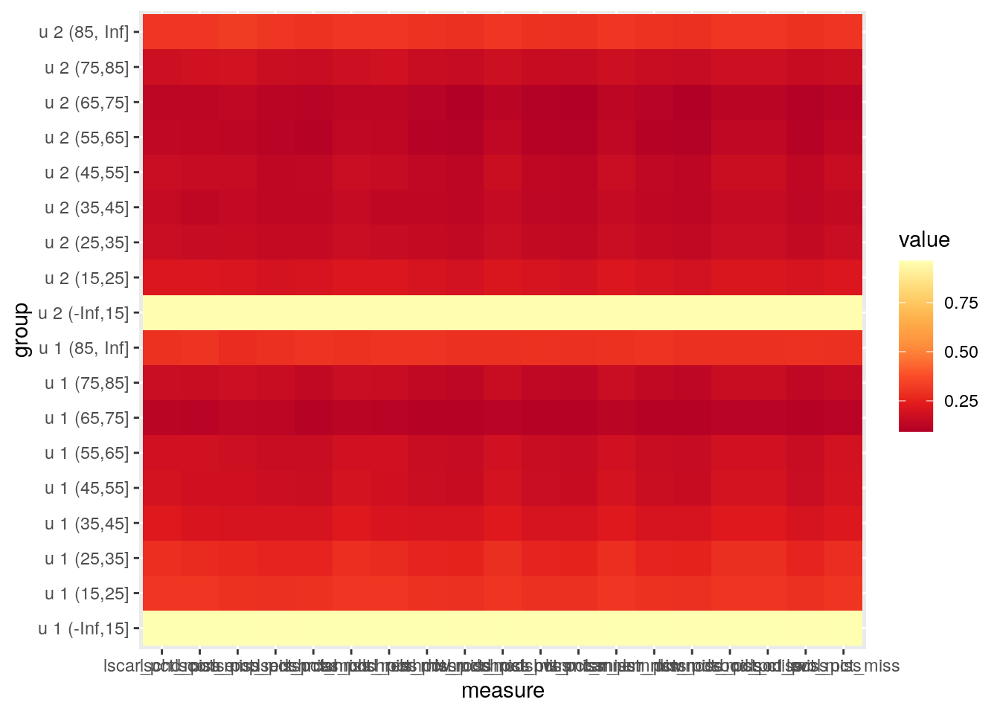
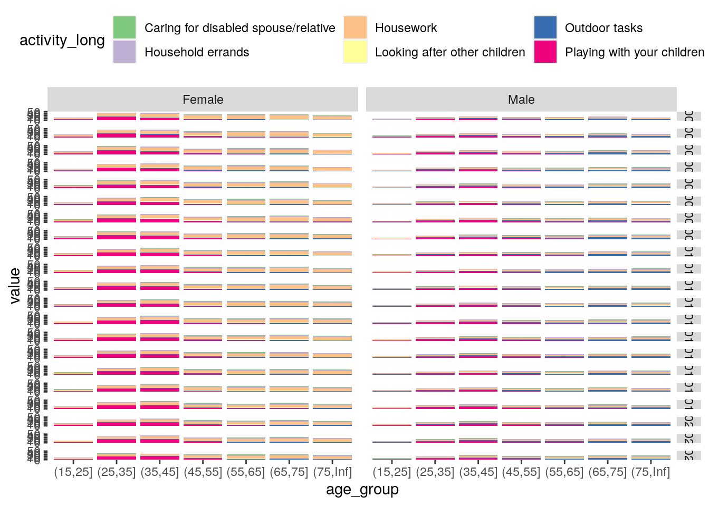

Code
library(tidyverse)
library(haven)
library(hildareadR)
library(gganimate)
library(here)
hilda_dir <- here("data", "raw-hilda")Time spent on unpaid domestic or care work
library(tidyverse)
library(haven)
library(hildareadR)
library(gganimate)
library(here)
hilda_dir <- here("data", "raw-hilda")The raw data underpinning this analysis is not version controlled. To reproduce the analysis, you must request permission from DSS and download it via the Australian Data Archive.
Raw data should be downloaded as .dta files put directly into /data/raw-hilda (not in subfolders), keeping the names provided by ADA.
In order to ensure that respondent data is not accidentally leaked during the render process, chunk output is turned off for most chunks until the end; I recommend you run this analysis interactively.
The render process also checks to ensure all groups are of sufficient size before rendering outputs.
Although we’ll use the {hildareadR} package (by Sara and Sebastian Kalucza) to combine wave data and extract variables, it’s still instructive to open the files using {haven} ourselves so that we can look at the column labels and particularly to understand the types of answers available.
This code assumes that all of the files have been unzipped directly into here("data", "raw-hilda"). If you’ve downloaded them from Dataverse and they’ve unzipped into separate folders by zip file, pull them back up to the parent folder.
here(hilda_dir, "Rperson_v220c.dta") |>
haven::read_dta() ->
all_lastwave
# expand columns labels out so we can decide which id columns to use
tibble(
name = names(all_lastwave),
question = map_chr(all_lastwave, ~ attr(.x, "label")),
answers = map(all_lastwave, ~ attr(.x, "labels"))) |>
unnest_longer(answers)Variable names in HILDA:
a through v)1 to 20 corresponding to the person the interviewee is referring to (since once person responds on behalf of their household)survey_vars <- tribble(
~ short, ~ long,
"lsmnhw", "Minutes per week - Housework",
"lsmncar", "Minutes per week - Caring for disabled spouse/relative",
"lsmnerr", "Minutes per week - Household errands",
"lsmnhw", "Minutes per week - Housework",
"lsmnocd", "Minutes per week - Looking after other children",
"lshrcar", "Hours per week - Caring for disabled spouse/relative",
"lshrchd", "Hours per week - Playing with your children",
"lshrerr", "Hours per week - Household errands",
# 'such as shopping, banking, paying bills, and keeping financial records (but do not include driving children to school and to other activities)'
"lshrhw", "Hours per week - Housework",
# 'such as preparing meals, washing dishes, cleaning house, washing clothes, ironing and sewing'
"lshrocd", "Hours per week - Looking after other children",
"lshrod", "Hours per week - Outdoor tasks",
# 'including home maintenance (repairs, improvements, painting etc.), car maintenance or repairs and gardening'
"lscar", "Combined - Caring for disabled spouse/relative",
"lschd", "Combined - Playing with your children",
"lscom", "Combined - Travelling to/from paid employment",
"lsemp", "Combined - Paid employment",
"lserr", "Combined - Household errands",
"lshw", "Combined - Housework",
"lsocd", "Combined - Playing with other peoples children",
"lsod", "Combined - Outdoor tasks",
"lsvol", "Combined - Volunteer/Charity work",
)
all_lastwave |>
select(ends_with(survey_vars$short)) ->
timeobs
attr(all_lastwave$vhhstate, "labels")The {hildareadR} package saves us a lot of the work of combining waves and selecting out variables of interest, as it handles the wave prefixes (although it is instructive to open the files in {haven} manually).
The variables of interest around hours/minutes per week spent on various activities all relate to the reporting person’s file. So we don’t need hgageNN and hgsexNN, which relate to other people in the household — we just need hgage and hgsex, which related to the person doing the reporting.
read_hilda(
c("hgsex", "hgage", survey_vars$short),
waves = 1:22, dir = hilda_dir, release = 22) |>
select(
-contains(paste0("hgage", 1:20)),
-contains(paste0("hgsex", 1:20))) |>
select(xwaveid, wave, hgage, hgsex, everything()) ->
all_dataLet’s first see how much missing data there is. There is formally missing data in R’s sense (NA), but this survey has also been coded such that negative numbers refer to various error codes (eg. “Did not know”). I’m going to collapse those down as missing too.
all_data |>
filter(hgage >= 0, hgsex >= 0) |>
# replace negative values with NA
mutate(across(starts_with("ls"), ~ case_when(.x < 0 ~ NA, TRUE ~ .x))) |>
summarise(across(
where(is.numeric),
~ length(which(is.na(.x))) / length(.x))) |>
t() [,1]
hgage 0.0000000
hgsex 0.0000000
hgagef 0.0000000
lshrerr 0.3570739
lshrhw 0.3500212
lshrod 0.3556669
lshrchd 0.3782936
lshrcar 0.3934411
lsmnerr 0.3848165
lsmnhw 0.3777923
lshrocd 0.4235931
lsmnocd 0.4235909
lsmncar 0.4207043
lsemp 0.3841965
lscom 0.3925507
lserr 0.3848209
lshw 0.3777945
lsod 0.3833655
lschd 0.4055349
lsocd 0.4235931
lsvol 0.4139858
lscar 0.4207043
lscarb 0.8969597
lscarmn 0.8969246Looks like reporting age and sex are all there. For most other variables, around 35–45% of the data are missing.
For lscarb and lscarmn, nearly 90% are missing. I’m not entirely sure what they are — there’s also lsmncar (caring minutes) and lscar (caring mins/hrs combined), so they must be something else (or perhaps a coding error - they don’t appear in the data dictionary). Let’s drop them.
For the remaining columns, I’d like to see if the missing data is concentrated in any age/sex/wave group:
all_data |>
select(-hgagef, -lscarb, -lscarmn) |>
filter(hgage >= 0, hgsex >= 0) |>
# replace negative values with NA
mutate(across(starts_with("ls"), ~ case_when(.x < 0 ~ NA, TRUE ~ .x))) |>
mutate(age_group = cut(hgage, c(-Inf, 15, 25, 35, 45, 55, 65, 75, 85, Inf))) |>
select(xwaveid, wave, hgsex, age_group, hgage, everything()) |>
group_by(wave, hgsex, age_group) |>
summarise(across(starts_with("ls"), list(
nobs = ~ length(.x),
pct_miss = ~ length(which(is.na(.x))) / length(.x)))) |>
ungroup() ->
grouped_missing_statsgrouped_missing_stats |>
select(wave, hgsex, age_group, ends_with("pct_miss")) |>
mutate(group = paste(wave, hgsex, age_group)) |>
pivot_longer(ends_with("pct_miss"), names_to = "measure") |>
ggplot() +
aes(y = group, x = measure, fill = value) +
geom_tile() +
scale_fill_distiller(palette = "YlOrRd")
Okay, this is too much to look at as one figure. Let’s look at it wave by wave:
grouped_missing_stats |>
select(wave, hgsex, age_group, ends_with("pct_miss")) |>
mutate(group = paste(wave, hgsex, age_group)) |>
pivot_longer(ends_with("pct_miss"), names_to = "measure") |>
filter(wave == "u") |>
ggplot() +
aes(y = group, x = measure, fill = value) +
geom_tile() +
scale_fill_distiller(palette = "YlOrRd")
Much better. If we look through the 20 or so waves by altering the filter, we can see there’s a lot of missing data in the 0-15s. That makes sense; I’m kind of surprised there are many of them answering the survey at all. I’ll cut the 0-15s.
Group numbers start to tail off in the 75-80 bracket. They’re not small enough to worry about identification (provided we don’t disaggregate any further) — in the realm of a few dozen people per group — but I might cut the 75-85 bucket and just look at 75+ to be safe.
Now let’s start actually looking at stats around time spent on various activities. I still need to resolve the “combined” hours/minutes spent measures.
all_data |>
select(-hgagef, -lscarb, -lscarmn) |>
filter(hgage >= 0, hgsex >= 0) |>
# replace negative time-spent values with NA
mutate(across(starts_with("ls"), ~ case_when(.x < 0 ~ NA, TRUE ~ .x))) |>
mutate(age_group = cut(hgage, c(15, 25, 35, 45, 55, 65, 75, Inf))) |>
filter(!is.na(age_group), wave != "a") |>
select(xwaveid, wave, hgsex, age_group, hgage, everything()) ->
refined_groups
refined_groups |>
group_by(wave, hgsex, age_group) |>
summarise(across(starts_with("ls"), list(
nobs = ~ length(.x),
p10 = ~ quantile(.x, 0.1, na.rm = TRUE),
q1 = ~ quantile(.x, 0.25, na.rm = TRUE),
mean = ~ mean(.x, na.rm = TRUE),
median = ~ median(.x, na.rm = TRUE),
q3 = ~ quantile(.x, 0.75, na.rm = TRUE),
p90 = ~ quantile(.x, 0.9, na.rm = TRUE)
))) ->
grouped_statsNow let’s visualise the stats. Along the way, we’ll confirm there none of the groups have gotten too small:
survey_vars |>
pull(long) |>
set_names(survey_vars$short) ->
survey_mappings
grouped_stats |>
ungroup() |>
pivot_longer(
-c(wave, hgsex, age_group),
names_to = c("activity", "statistic"),
names_sep = "_",
values_to = "value") |>
# recode the values
mutate(
sex = case_match(hgsex, 1 ~ "Male", 2 ~ "Female"),
wave_num = match(wave, letters),
year = wave_num + 2000,
activity_long = str_replace_all(activity, survey_mappings),
statistic = case_match(statistic,
"nobs" ~ "Number of people",
"p10" ~ "10th percentile",
"q1" ~ "25th percentile",
"mean" ~ "Average",
"median" ~ "Median",
"q3" ~ "75th percentile",
"p90" ~ "90th percentile")) |>
separate(activity_long, into = c("units", "activity_long"), sep = " - ") |>
select(year, sex, age_group, activity, units, activity_long, statistic, value) ->
grouped_stats_recoded
grouped_stats_recoded |>
filter(statistic == "Number of people") |>
pull(value) |>
min() ->
min_group_size
if (min_group_size < 30) {
stop(paste(
"Error: minimum group size too small to produce outputs while preserving",
"privacy of respondants. Checking groupings in analysis code."))
}
# start with hrs vars
grouped_stats_recoded |>
filter(units == "Hours per week", statistic == "Average") |>
ggplot() +
aes(x = age_group, y = value, fill = activity_long) +
geom_col() +
facet_grid(vars(year), vars(sex)) +
scale_fill_brewer(type = "qual") +
theme(
legend.position = "top",
legend.direction = "horizontal")
This is a good start, and it’s already clear that there are big gender discrepancies in terms of tasks like Housework and Playing with your children. It might work better animating the waves, rather than facetting them:
grouped_stats_recoded |>
filter(units == "Hours per week", statistic == "Average") |>
ggplot() +
aes(x = age_group, y = value, fill = activity_long) +
geom_col() +
facet_wrap(vars(sex), ncol = 2) +
transition_time(year) +
enter_fade() +
exit_fade() +
ease_aes("sine-in-out") +
scale_fill_brewer(type = "qual") +
theme(
legend.position = "top",
legend.direction = "horizontal") +
labs(
title = "Hours per week: {floor(frame_time)}"
) ->
ani_hrsweek_mean
anim_save("ani_hrsweek_mean.mp4",
ani_hrsweek_mean,
path = here("out", "assets"),
renderer = ffmpeg_renderer()){{ video /assets/ani_hrsweek_mean.mp4 }}
We could also look at this using the various quantiles we have computed, but that might be easier to do interactively. Let’s write the data out and do the chart in a separate doc.
grouped_stats_recoded |>
filter(
units == "Combined",
statistic %in% c("Number of people", "Average")) |>
pivot_wider(names_from = statistic, values_from = value) |>
write_csv(here("data", "hilda-unpaid-time-stats.csv"))